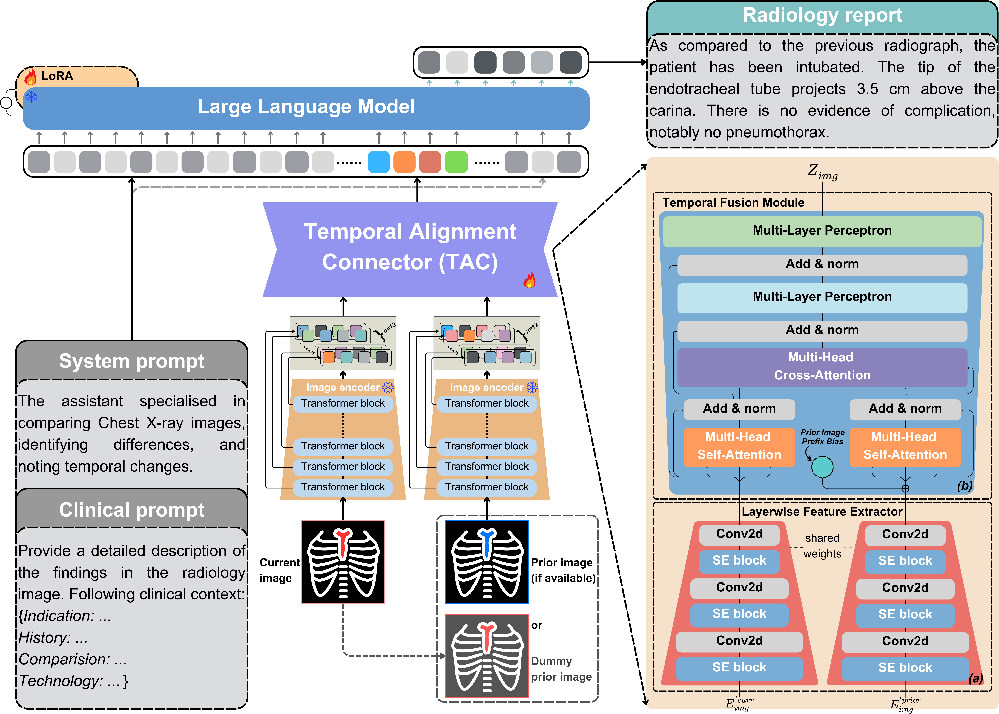

Radiology report generation (RRG) requires advanced medical image analysis, effective temporal reasoning, and accurate text generation. While multimodal large language models (MLLMs) align with pre-trained vision encoders to enhance visual-language understanding, most existing methods rely on single-image analysis or rule-based heuristics to process multiple images, failing to fully leverage temporal information in multi-modal medical datasets. In this paper, we introduce Libra, a temporal-aware MLLM tailored for chest X-ray report generation. Libra combines a radiology-specific image encoder with a novel Temporal Alignment Connector (TAC), designed to accurately capture and integrate temporal differences between paired current and prior images. Extensive experiments on the MIMIC-CXR dataset demonstrate that Libra establishes a new state-of-the-art benchmark among similarly scaled MLLMs, setting new standards in both clinical relevance and lexical accuracy.
Explore the capabilities of Libra with our interactive demo.
Temporal hallucination is a critical challenge in radiology report generation (RRG). Traditional multimodal large language models (MLLMs) struggle to integrate prior images correctly, often generating:
Libra addresses these limitations by integrating a Temporal Alignment Connector (TAC) to improve temporal awareness, ensuring:
We propose Libra (Leveraging Temporal Images for Biomedical Radiology Analysis), a novel framework tailored for radiology report generation (RRG) that incorporates temporal change information to address the challenges of interpreting medical images effectively.
Libra leverages RAD-DINO, a pre-trained visual transformer, as its image encoder to generate robust and scalable image features. These features are further refined by a Temporal Alignment Connector (TAC), a key innovation in Libra's architecture. The TAC comprises:
These refined features are fed into Meditron, a specialised medical large language model (LLM), to generate comprehensive, temporally-aware radiology reports. Libra’s modular design seamlessly integrates state-of-the-art open-source pre-trained models for both image and text, aligning them through a temporal-aware adapter to ensure robust cross-modal reasoning and understanding.
Through a two-stage training strategy, Libra demonstrates the powerful potential of multimodal large language models (MLLMs) in specialised radiology applications. Extensive experiments on the MIMIC-CXR dataset highlight Libra's performance, setting a new state-of-the-art benchmark among models of the same parameter scale.


@misc{zhang2025libraleveragingtemporalimages,
title={Libra: Leveraging Temporal Images for Biomedical Radiology Analysis},
author={Xi Zhang and Zaiqiao Meng and Jake Lever and Edmond S. L. Ho},
year={2025},
eprint={2411.19378},
archivePrefix={arXiv},
primaryClass={cs.CV},
url={https://arxiv.org/abs/2411.19378},
}
This website is adapted from Nerfies, licensed under a Creative Commons Attribution-ShareAlike 4.0 International License.